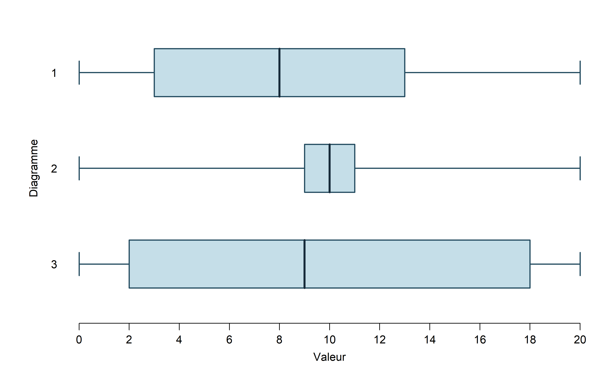
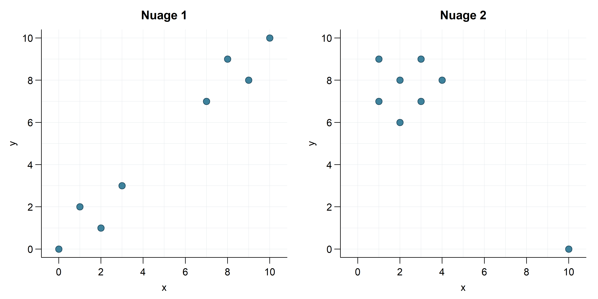

Menu Math
Dans chaque Menu Math, vous créez des diagrammes, des expériences ou des jeux qui respectent une liste de contraintes. Une contrainte est une condition à respecter. Une même création peut respecter plusieurs contraintes.
Votre défi : respecter chaque contrainte au moins une fois, avec le moins de créations possible. Expliquez ensuite pourquoi vous ne pouvez pas en utiliser moins.
Pour découvrir le dispositif et consulter d’autres exemples, voyez la présentation des Menu Math par leur créateur, Nat Banting (en anglais).
Ajout de données — Moyenne, médiane, mode et étendue
Voici la série de départ :
1 ; 2 ; 3 ; 4 ; 5
Ajoutez le moins de données possible pour que la série finale respecte les quatre contraintes en même temps. Les données ajoutées doivent être des nombres entiers strictement positifs. Vous pouvez répéter une valeur, mais vous ne pouvez ni retirer ni modifier les données de départ.
| A — La moyenne est 4. | B — La médiane reste 3. |
| C — Le mode unique est 3. | D — L’étendue augmente par rapport à celle de la série de départ. |
Présentez votre série finale et vérifiez chaque contrainte. Expliquez pourquoi il est impossible de les respecter toutes en ajoutant moins de données.
NotePour l’enseignant — Solution possible et preuve du minimum
Une solution avec deux données ajoutées
On ajoute 3 et 10. La série finale ordonnée est :
1 ; 2 ; 3 ; 3 ; 4 ; 5 ; 10
- A : la somme est 28 et il y a sept données, donc la moyenne est \(28/7=4\).
- B : la quatrième donnée est 3, donc la médiane reste 3.
- C : 3 apparaît deux fois et chaque autre valeur apparaît une seule fois. Le mode unique est donc 3.
- D : l’étendue passe de \(5-1=4\) à \(10-1=9\).
Pourquoi deux est-il le minimum?
Sans ajout, la moyenne est 3 : la série ne satisfait pas A.
Avec une seule donnée ajoutée, il faudrait ajouter 3 pour que 3 devienne le mode unique, puisque chaque valeur de départ apparaît une seule fois. Mais la moyenne resterait alors \((15+3)/6=3\), ce qui ne respecte pas A. Un seul ajout ne suffit donc pas.
La solution proposée satisfait les quatre contraintes avec deux ajouts : le minimum est deux données.
Une piste pour construire la solution
Après avoir choisi d’ajouter 3 pour créer le mode, on cherche la deuxième donnée. Pour obtenir une moyenne de 4 avec sept données, la somme doit être \(7\times4=28\). Les données de départ et le 3 ajouté ont une somme de 18 : il reste donc à ajouter \(28-18=10\). On vérifie ensuite la médiane et l’étendue.
Menu original créé pour cette collection.
Ajout de données — Faire diminuer la médiane et augmenter la moyenne
Voici la série de départ :
1 ; 2 ; 3 ; 4 ; 5 ; 6
Ajoutez le moins de données possible pour que la série finale respecte les quatre contraintes en même temps. Les données ajoutées doivent être des nombres entiers strictement positifs. Vous pouvez répéter une valeur, mais vous ne pouvez ni retirer ni modifier les données de départ.
| A — La moyenne est 4. | B — La médiane est 3. |
| C — Le mode unique est 3. | D — L’étendue augmente par rapport à celle de la série de départ. |
Présentez votre série finale et vérifiez chaque contrainte. Expliquez pourquoi il est impossible de les respecter toutes en ajoutant moins de données.
NotePour l’enseignant — Solution possible et preuve du minimum
Une solution avec trois données ajoutées
On ajoute 3 ; 3 ; 9. La série finale ordonnée est :
1 ; 2 ; 3 ; 3 ; 3 ; 4 ; 5 ; 6 ; 9
- A : la somme est 36 et il y a neuf données, donc la moyenne est \(36/9=4\).
- B : la cinquième donnée est 3, donc la médiane est 3.
- C : 3 apparaît trois fois et chaque autre valeur apparaît une seule fois. Le mode unique est donc 3.
- D : l’étendue passe de \(6-1=5\) à \(9-1=8\).
Pourquoi trois est-il le minimum?
La série de départ a une somme de 21 et une moyenne de \(21/6=3,5\). Sans ajout, elle ne satisfait pas A.
Avec un seul ajout, pour obtenir une moyenne de 4, la somme devrait être \(7\times4=28\). Il faudrait donc ajouter \(28-21=7\). La série serait alors 1 ; 2 ; 3 ; 4 ; 5 ; 6 ; 7, dont la médiane est 4. La contrainte B ne serait pas respectée.
Avec deux ajouts, leur somme devrait être \(8\times4-21=11\) pour respecter A. Or, pour obtenir une médiane de 3, les deux nouvelles données devraient être inférieures ou égales à 3. En effet, si l’une dépassait 3, il y aurait au plus quatre données inférieures ou égales à 3 : la cinquième serait supérieure à 3 et la quatrième serait au moins 3, donc leur moyenne dépasserait 3. Les deux ajouts seraient ainsi au plus 3 chacun, et leur somme serait au plus 6, ce qui contredit la somme de 11 nécessaire.
La solution proposée satisfait les quatre contraintes avec trois ajouts : le minimum est trois données.
Menu original créé pour cette collection.
Quartiles et dispersion
Construisez le moins de diagrammes de quartiles possible pour satisfaire chacune des six contraintes au moins une fois.
Pour tous les diagrammes :
- le minimum est 0 et le maximum est 20;
- les cinq valeurs doivent respecter l’ordre suivant : minimum < Q₁ < médiane < Q₃ < maximum;
- les moustaches vont jusqu’au minimum et au maximum.
| A — La boîte occupe exactement la moitié de l’étendue. | B — La médiane est au centre de la boîte. |
| C — La moustache gauche est plus longue que la boîte entière. | D — La moustache droite est plus longue que la boîte entière. |
| E — La médiane est plus proche de Q₁ que de Q₃. | F — La distance entre Q₁ et la médiane dépasse la somme des longueurs des deux moustaches. |
Pour chaque diagramme, indiquez les lettres des contraintes respectées et expliquez comment vous le savez. Justifiez ensuite le nombre de diagrammes utilisés.
NotePour l’enseignant — Solutions possibles, minimum et relances
Les exemples ci-dessous constituent une solution possible, parmi plusieurs. L’objectif est de discuter des contraintes qui peuvent coexister et de celles qui sont incompatibles.
Trois diagrammes suffisent
| Diagramme | Minimum | Q₁ | Médiane | Q₃ | Maximum | Contraintes satisfaites |
|---|---|---|---|---|---|---|
| 1 | 0 | 3 | 8 | 13 | 20 | A, B |
| 2 | 0 | 9 | 10 | 11 | 20 | B, C, D |
| 3 | 0 | 2 | 9 | 18 | 20 | E, F |
- Diagramme 1 : la boîte a une longueur de 10, soit la moitié de l’étendue de 20 (A). La médiane partage cette boîte en deux intervalles de longueur 5 (B).
- Diagramme 2 : la médiane est au centre de la boîte (B). Chaque moustache a une longueur de 9, supérieure à celle de la boîte, qui est de 2 (C et D).
- Diagramme 3 : la médiane est à une distance de 7 de Q₁ et de 9 de Q₃ (E). L’intervalle entre Q₁ et la médiane mesure 7, ce qui dépasse la longueur totale des moustaches, soit 2 + 2 = 4 (F).
Pourquoi faut-il au moins trois diagrammes?
Les contraintes A, C et F sont incompatibles deux à deux. Pour le voir, comparons la longueur de la boîte à la somme des longueurs des deux moustaches :
- A : la boîte et les deux moustaches réunies ont la même longueur.
- C : la boîte est plus courte que la seule moustache gauche; elle est donc plus courte que les deux moustaches réunies.
- F : une partie de la boîte est déjà plus longue que les deux moustaches réunies; la boîte entière l’est donc aussi.
Un même diagramme ne peut appartenir à deux de ces trois cas. Il faut donc au moins trois diagrammes. Comme l’exemple couvre toutes les contraintes avec trois diagrammes, le minimum est trois.
Relances possibles
- Quelles contraintes avez-vous essayé de réunir en premier? Pourquoi?
- Peut-on satisfaire C et D avec un même diagramme? Et B avec F?
- Peut-on satisfaire E sans F, ou F sans E? Peut-on aussi les satisfaire ensemble? Donnez des exemples.
- Quels éléments de votre solution peut-on déplacer tout en conservant les contraintes satisfaites?
- Des intervalles de longueurs différentes peuvent-ils représenter une même proportion des observations?
Notions mobilisées : quartiles, médiane, étendue, écart interquartile, comparaison de longueurs, compatibilité des contraintes et justification d’un minimum.
Point de vigilance : un diagramme de quartiles ne montre pas la répartition des observations à l’intérieur de chacun des intervalles. Des intervalles de même longueur ne suffisent pas à conclure que les données sont uniformément réparties.
Menu original créé pour cette collection. Le code R du graphique est intégré au QMD et masqué dans le rendu HTML.
Moyenne, médiane, mode et écart type — Josh Giesbrecht
Construisez le moins de séries de données possible pour satisfaire chaque contrainte au moins une fois. Chaque série doit contenir au moins six données.
| A : La moyenne est exactement 3. | B : La médiane est plus grande que la moyenne. |
| C : La série n’a pas un mode unique. | D : La médiane est plus petite que le mode. |
| E : Un mode est 5,5. | F : La série contient un nombre impair de données. |
| G : L’écart type est supérieur à 5. | H : La médiane n’apparaît pas dans la série. |
| I : La médiane est 4. |
Quelles contraintes pouvez-vous respecter avec une même série? Lesquelles ne peuvent pas être réunies? Présentez vos séries, indiquez les lettres des contraintes respectées et expliquez votre démarche. Justifiez le nombre de séries utilisées.
Activité de Josh Giesbrecht : version française, proposée dans la banque de Nat Banting, sous licence CC BY-NC.
NotePour l’enseignant — Pistes de solution et relances
Précisions sur l’énoncé
La banque crédite Joce Dagenais et Pierre Tranchemontagne pour les traductions françaises, sans attribution individuelle pour ce document. La présentation et les formulations ont été harmonisées pour cette collection, en retirant une contrainte redondante de la version française. La licence CC BY-NC annoncée par la banque ne précise pas de version.
Une contrainte redondante de la version française a été retirée dans cette adaptation : l’ancienne contrainte D (« La moyenne est plus petite que la médiane ») était équivalente à B. Les neuf contraintes restantes ont été réétiquetées de A à I. Les exemples et la preuve du minimum ci-dessous correspondent à cette adaptation.
Pour C, une série à deux modes convient. Pour D, les exemples utilisent un mode unique afin d’éviter une ambiguïté. Pour G, on peut préciser la convention de calcul de l’écart type; les exemples proposés dépassent 5 avec le diviseur \(n\) comme avec le diviseur \(n-1\).
Pistes à donner progressivement
- Avec une moyenne imposée et un effectif choisi, quelle doit être la somme des données?
- Pour un effectif impair, où se trouve la médiane dans la série ordonnée? Peut-on alors satisfaire H?
- Pour obtenir une médiane absente des données, peut-on choisir deux valeurs centrales différentes dont la moyenne est 4?
- Répéter 5,5 peut aider à satisfaire E. Comment obtenir deux modes pour satisfaire aussi C?
- Comment augmenter la dispersion sans modifier la somme ni la médiane? On peut, par exemple, éloigner deux valeurs des extrêmes en sens opposés.
Une solution possible avec deux séries
Les séries peuvent contenir des valeurs négatives et décimales : l’énoncé ne les interdit pas.
| Série | Données ordonnées | Contraintes satisfaites |
|---|---|---|
| 1 | −15 ; 3 ; 3 ; 4 ; 5,5 ; 5,5 ; 15 | A, B, C, E, F, G, I |
| 2 | −10 ; 1,5 ; 2,5 ; 5,5 ; 5,5 ; 10 | B, D, E, G, H, I |
- Série 1 : sept données de somme 21, donc de moyenne 3. La médiane est 4. Les deux modes sont 3 et 5,5.
- Série 2 : six données de somme 15, donc de moyenne 2,5. La médiane est \((2,5+5,5)/2=4\), absente de la série. Le mode unique est 5,5.
- Les écarts types calculés avec le diviseur \(n\) sont respectivement d’environ 8,29 et 6,21; avec le diviseur \(n-1\), ils sont d’environ 8,96 et 6,80.
Pourquoi deux est-il le minimum?
F et H sont incompatibles : avec un nombre impair de données, la médiane est la valeur centrale de la série ordonnée et appartient donc à la série. Il faut au moins deux séries. Les exemples satisfont toutes les contraintes avec deux séries : ce minimum est atteint.
Relances possibles
- Peut-on trouver une autre solution en deux séries, avec des données très différentes?
- Que change l’interdiction des valeurs négatives dans votre démarche?
- Avoir une moyenne inférieure à la médiane suffit-il pour décrire toute la forme de la distribution?
- Quelles contraintes ajouteriez-vous pour obliger à construire au moins trois séries?
Les exemples, la preuve du minimum et les pistes pédagogiques ont été rédigés pour cette collection; ils ne constituent pas un corrigé fourni par l’auteur de la ressource.
Nuages de points et corrélation
Construisez le moins de nuages de points possible pour satisfaire chacune des six contraintes au moins une fois. Un même nuage peut satisfaire plusieurs contraintes.
Chaque nuage doit comporter huit points différents, avec des coordonnées entières entre 0 et 10. Vous pouvez commencer par un tableau de coordonnées, puis placer les points sur une grille. Vous n’avez pas à calculer le coefficient de corrélation ni la pente : utilisez le dessin pour justifier le signe que vous prévoyez pour chacun.
| A — Le coefficient de corrélation linéaire est positif. | B — La pente de la droite des moindres carrés est négative. |
| C — Pour une même valeur de \(x\), plusieurs valeurs de \(y\) sont observées. | D — On semble voir deux groupes distincts dans les données. |
| E — Une zone sans observations sépare nettement deux plages de valeurs de \(x\). | F — Si on retirait un point, la corrélation semblerait nettement plus forte ou plus faible. |
Pour chaque nuage, indiquez les lettres des contraintes respectées. Montrez les points, les groupes ou les zones qui justifient vos réponses. Justifiez le nombre de nuages utilisés.
NotePour l’enseignant — Solutions dessinées, minimum et relances
Une solution possible en deux nuages
Le premier nuage couvre A, D et E. Le second couvre B, C et F, et peut aussi être défendu pour D ou E : les regroupements proposés ne constituent pas un classement exclusif.

| Nuage | Coordonnées des huit points |
|---|---|
| 1 | (0 ; 0), (1 ; 2), (2 ; 1), (3 ; 3), (7 ; 7), (8 ; 9), (9 ; 8), (10 ; 10) |
| 2 | (1 ; 7), (1 ; 9), (2 ; 8), (2 ; 6), (3 ; 7), (3 ; 9), (4 ; 8), (10 ; 0) |
- Nuage 1 : la relation globale est croissante, donc le coefficient est positif (A). On semble voir deux groupes (D), avec une zone sans points entre les abscisses 3 et 7 (E).
- Nuage 2 : la droite des moindres carrés a une pente négative (B). Certaines abscisses sont répétées avec des ordonnées différentes (C). Retirer le point (10 ; 0) fait disparaître l’essentiel de la corrélation linéaire négative (F).
Pour vérifier les exemples, les coefficients sont d’environ 0,98 pour le premier nuage et −0,87 pour le second. Sans le point (10 ; 0), le coefficient du second est d’environ 0,08. Ces calculs servent à confirmer la lecture graphique; ils ne sont pas requis des élèves.
Pourquoi deux est-il le minimum?
A et B sont incompatibles. Lorsque les deux variables varient, le coefficient de corrélation linéaire et la pente de la droite des moindres carrés ont le même signe. Un coefficient positif (A) ne peut donc pas être associé à une pente négative (B) pour le même nuage. Si une variable est constante, le coefficient de corrélation n’est pas défini et A n’est pas satisfaite. Il faut au moins deux nuages; les exemples montrent que deux suffisent.
Le dessin permet de formuler une conjecture sur le signe. Si le signe est difficile à déterminer visuellement, on peut le vérifier avec un outil de calcul. Le lien entre les signes concerne ici la droite des moindres carrés, ajustée avec une ordonnée à l’origine.
Relances possibles
- Quel lien y a-t-il entre le signe du coefficient de corrélation et celui de la pente des moindres carrés? Faites reformuler A en parlant de pente, puis B en parlant de corrélation.
- Pour une même valeur de \(x\), peut-on observer plusieurs \(y\) sans empêcher une relation linéaire globale? Distinguez nuage de données et graphique d’une fonction.
- Deux groupes apparents et un trou en \(x\), est-ce nécessairement la même chose? Des groupes peuvent occuper des plages de \(x\) qui se chevauchent; une zone sans données peut aussi interrompre une même tendance.
- Le point qui influence la corrélation doit-il être éloigné de la tendance? Dans le nuage 2, le point isolé contribue fortement à créer la tendance globale. Un point éloigné peut renforcer une corrélation ou l’affaiblir, selon sa position.
- Faut-il supprimer le point isolé? Le graphique seul ne suffit pas : il faut examiner le contexte et la qualité de la mesure.
- Pouvez-vous satisfaire F avec un point qui affaiblit la corrélation plutôt qu’un point qui la renforce?
Notions mobilisées : nuage de points, signe et force de la corrélation linéaire, variation conjointe, abscisses répétées, regroupements apparents et influence d’une observation.
Menu original créé pour cette collection. Les solutions sont dessinées par un bloc R intégré au QMD, avec le code masqué dans le HTML.
Événements, complémentarité et incompatibilité
On tire au hasard une carte parmi 12 cartes numérotées de 1 à 12. Chaque carte a la même probabilité d’être tirée.
Un événement peut être décrit par une phrase, comme « obtenir un nombre pair », ou par la liste des nombres qui le réalisent. Deux descriptions qui correspondent exactement aux mêmes cartes désignent le même événement.
Construisez le moins d’événements différents possible pour respecter les six contraintes. Certaines portent sur un événement; d’autres demandent d’en comparer deux. Un événement peut servir plusieurs fois.
| A — Un événement a une probabilité de \(1/2\). | B — Un événement a une probabilité de \(1/3\). |
| C — Un événement est plus probable que son contraire. | D — Deux événements sont complémentaires. |
| E — Deux événements sont incompatibles, mais ne sont pas complémentaires. | F — Deux événements différents ont la même probabilité. |
Nommez vos événements, donnez leurs probabilités et indiquez ceux qui permettent de respecter chaque contrainte. Justifiez le nombre d’événements utilisés.
NotePour l’enseignant — Solution possible, minimum et relances
Une solution en quatre événements
| Événement | Cartes qui le réalisent | Probabilité |
|---|---|---|
| É₁ | 1, 2, 3, 4, 5, 6 | \(1/2\) |
| É₂ | 7, 8, 9, 10, 11, 12 | \(1/2\) |
| É₃ | 1, 2, 3, 4 | \(1/3\) |
| É₄ | 5, 6, 7, 8, 9, 10, 11, 12 | \(2/3\) |
- A : É₁ ou É₂.
- B : É₃.
- C : É₄ a une probabilité de \(2/3\), contre \(1/3\) pour son contraire É₃.
- D : É₁ et É₂ sont complémentaires. É₃ et É₄ le sont aussi : dans chaque paire, chaque carte réalise exactement un des deux événements.
- E : É₂ et É₃ sont incompatibles, car aucune carte ne réalise les deux. Ils ne sont pas complémentaires : si on tire 5 ou 6, aucun des deux ne se produit.
- F : É₁ et É₂ sont différents et ont chacun une probabilité de \(1/2\).
Pourquoi faut-il au moins quatre événements?
A, B et C exigent trois probabilités différentes : \(1/2\), \(1/3\) et une probabilité supérieure à \(1/2\). En effet, si un événement est plus probable que son contraire, sa probabilité dépasse \(1/2\).
Il faut donc au moins trois événements distincts pour A, B et C. Avec seulement ces trois événements, toutes les probabilités seraient différentes, ce qui ne permettrait pas de satisfaire F. Il faut donc au moins un quatrième événement, ayant la même probabilité que l’un des autres.
La solution proposée respecte les six contraintes avec quatre événements : le minimum est quatre.
Relances possibles
- Deux événements différents peuvent-ils se produire pour une même carte? Oui : tirer 2 réalise à la fois É₁ et É₃. « Différents » ne signifie pas « incompatibles ».
- Des événements équiprobables sont-ils nécessairement complémentaires? Non. Par exemple, « obtenir un nombre pair » et « obtenir un nombre de 1 à 6 » ont chacun une probabilité de \(1/2\), mais se chevauchent et ne couvrent pas toutes les cartes.
- Quelle est la différence entre “ils ne peuvent pas se produire ensemble” et “exactement un des deux se produit à chaque tirage”? La première propriété décrit l’incompatibilité; la seconde ajoute que les événements couvrent toutes les possibilités, ce qui en fait des complémentaires.
- Pour E, comment montrer que les deux événements ne sont pas complémentaires? Trouvez une carte qui ne réalise aucun des deux, après avoir vérifié qu’ils sont incompatibles.
- Peut-on trouver une autre solution en quatre événements en utilisant des nombres pairs, des multiples ou d’autres propriétés? Les listes proposées ne sont qu’un exemple.
Notions mobilisées : événement et résultats qui le réalisent, probabilité, événement contraire, complémentarité, incompatibilité et événements différents de même probabilité.
Menu original créé pour cette collection.
Probabilités et événements complémentaires
Construisez le moins d’expériences aléatoires possible pour satisfaire chacune des six contraintes au moins une fois. Une même expérience peut satisfaire plusieurs contraintes.
Choisissez une roulette ou un sac de billes. L’expérience consiste à faire tourner la roulette une fois ou à tirer une seule bille. Le résultat observé est la couleur obtenue.
Dans un sac, chaque bille doit avoir la même chance d’être tirée. Sur une roulette, la probabilité d’une couleur correspond à la part du disque qu’elle occupe : par exemple, un secteur de \(90°\) donne une probabilité de \(90/360=1/4\).
| A — Toutes les couleurs possibles sont équiprobables : elles ont la même probabilité d’être obtenues. | B — Les événements « obtenir du rouge » et « obtenir du bleu » sont complémentaires. |
| C — La probabilité d’obtenir du rouge est de \(1/2\). | D — La probabilité d’obtenir du bleu est de \(1/3\). |
| E — Le rouge et le bleu sont tous deux possibles, mais le rouge est plus probable. | F — Obtenir du vert est possible. |
Pour chaque expérience, décrivez le matériel et donnez la probabilité de chaque couleur. Indiquez les lettres des contraintes respectées. Justifiez le nombre d’expériences utilisées.
NotePour l’enseignant — Solutions possibles, minimum et relances
Deux expériences suffisent
Voici une première solution. Toutes les billes d’un sac sont également susceptibles d’être tirées.
| Expérience | Composition du sac | Probabilités rouge, bleu, vert | Contraintes satisfaites |
|---|---|---|---|
| 1 | 3 rouges et 3 bleues | \(1/2\) ; \(1/2\) ; \(0\) | A, B, C |
| 2 | 3 rouges, 2 bleues et 1 verte | \(1/2\) ; \(1/3\) ; \(1/6\) | C, D, E, F |
Dans le premier sac, les deux couleurs possibles sont équiprobables et couvrent toutes les issues; obtenir l’une exclut l’autre. Dans le second, le rouge est plus probable que le bleu, et le vert est possible.
Pourquoi deux est-il le minimum?
B et F sont incompatibles. Si « rouge » et « bleu » sont complémentaires, chaque résultat réalise exactement l’un de ces deux événements. Il ne reste donc aucune possibilité d’obtenir du vert.
Il faut au moins deux expériences. Comme la solution proposée couvre toutes les contraintes avec deux expériences, le minimum est deux.
Une autre organisation en deux expériences
| Expérience | Composition du sac | Probabilités rouge, bleu, vert | Contraintes satisfaites |
|---|---|---|---|
| 1 | 1 rouge et 1 verte | \(1/2\) ; \(0\) ; \(1/2\) | A, C, F |
| 2 | 4 rouges et 2 bleues | \(2/3\) ; \(1/3\) ; \(0\) | B, D, E |
Les contraintes peuvent donc être regroupées de différentes façons. Pour A, on compare uniquement les couleurs qui peuvent effectivement être obtenues : une couleur absente n’est pas une issue possible.
Relances possibles
- Peut-on satisfaire A et D ensemble? Qu’est-ce que cela impose aux couleurs possibles? Oui : si le bleu a une probabilité de \(1/3\) et si toutes les couleurs possibles sont équiprobables, il faut exactement trois couleurs possibles, chacune de probabilité \(1/3\).
- Deux sacs de compositions différentes peuvent-ils représenter la même expérience du point de vue des probabilités? Oui, si les proportions des couleurs sont les mêmes. Par exemple, 1 rouge et 1 bleue donnent les mêmes probabilités de couleur que 3 rouges et 3 bleues.
- Comment remplacer vos sacs par des roulettes sans changer les probabilités? Les angles doivent conserver les proportions. La première solution peut être représentée par une roulette avec deux secteurs de \(180°\), puis une roulette avec des secteurs rouge de \(180°\), bleu de \(120°\) et vert de \(60°\).
Notions mobilisées : univers des possibles, équiprobabilité, événements complémentaires, événement impossible, comparaison de probabilités et équivalence de modèles aléatoires pour un résultat observé.
Menu original créé pour cette collection.
Tirages successifs, remise et dépendance
Construisez le moins d’expériences possible pour respecter chacune des six contraintes au moins une fois. Une même expérience peut respecter plusieurs contraintes.
Chaque expérience consiste à tirer successivement deux billes dans un même sac.
- Le sac contient seulement des billes rouges et bleues, avec au moins une de chaque couleur.
- Chaque bille a la même chance d’être tirée.
- Vous choisissez le nombre de billes de chaque couleur et si vous remettez la première bille avant le deuxième tirage. Si vous la remettez, mélangez le sac.
- Vous notez les couleurs dans l’ordre : rouge–bleu et bleu–rouge sont deux résultats différents.
| A — Les quatre résultats rouge–rouge, rouge–bleu, bleu–rouge et bleu–bleu sont possibles et équiprobables. | B — On est certain d’obtenir deux couleurs différentes. |
| C — Au premier tirage, obtenir du rouge est deux fois plus probable qu’obtenir du bleu. | D — La première bille est remise dans le sac avant le deuxième tirage. |
| E — Connaître la couleur obtenue au premier tirage change les probabilités des couleurs au deuxième. | F — Obtenir deux rouges est possible, mais obtenir deux bleues est impossible. |
Pour chaque expérience, décrivez le sac et la règle de remise. Indiquez les lettres des contraintes respectées. Appuyez vos explications sur un arbre, un tableau ou une liste des résultats et de leurs probabilités. Justifiez le nombre d’expériences utilisées.
NotePour l’enseignant — Solution possible, minimum et relances
Une solution en trois expériences
| Expérience | Composition initiale du sac | Remise? | Contraintes satisfaites |
|---|---|---|---|
| 1 | 1 rouge et 1 bleue | Oui | A, D |
| 2 | 1 rouge et 1 bleue | Non | B, E |
| 3 | 2 rouges et 1 bleue | Non | C, E, F |
Les probabilités des résultats ordonnés sont les suivantes :
| Expérience | Rouge–rouge | Rouge–bleu | Bleu–rouge | Bleu–bleu |
|---|---|---|---|---|
| 1 | \(1/4\) | \(1/4\) | \(1/4\) | \(1/4\) |
| 2 | \(0\) | \(1/2\) | \(1/2\) | \(0\) |
| 3 | \(1/3\) | \(1/3\) | \(1/3\) | \(0\) |
- Expérience 1 : après la remise, les probabilités du deuxième tirage restent \(1/2\) pour chaque couleur. Les quatre résultats ordonnés ont une probabilité de \(1/4\).
- Expérience 2 : la couleur obtenue en premier détermine celle du deuxième tirage. Les deux couleurs seront nécessairement différentes.
- Expérience 3 : au premier tirage, les probabilités du rouge et du bleu sont respectivement \(2/3\) et \(1/3\). Après un rouge, la probabilité d’un rouge au deuxième tirage est \(1/2\); après un bleu, elle est \(1\). Deux rouges sont possibles, mais deux bleues sont impossibles.
Pourquoi faut-il trois expériences?
A, B et C sont incompatibles deux à deux.
- A et B : A permet deux couleurs identiques, tandis que B l’interdit.
- A et C : si les quatre résultats ordonnés sont équiprobables, la probabilité du rouge au premier tirage est \(1/4+1/4=1/2\), comme celle du bleu. Le rouge n’est donc pas deux fois plus probable.
- B et C : avec remise, obtenir deux billes de même couleur reste possible. Sans remise, garantir deux couleurs différentes exige exactement une bille rouge et une bille bleue : s’il y en avait au moins deux d’une couleur, on pourrait tirer cette couleur deux fois. Les couleurs sont alors équiprobables au premier tirage, ce qui exclut C.
Il faut donc au moins trois expériences. La solution proposée couvre toutes les contraintes avec trois expériences : le minimum est trois.
Relances possibles
- Sans remise, le deuxième tirage a-t-il forcément moins de résultats de couleur possibles? Non. Dans l’expérience 3, après un rouge, les deux couleurs restent possibles; après un bleu, seul le rouge reste possible. Distinguez le nombre de billes et le nombre de couleurs possibles.
- Dans l’expérience 3, rouge–bleu et bleu–rouge sont-ils également probables? Oui : \((2/3)(1/2)=1/3\) et \((1/3)(1)=1/3\). Des probabilités différentes au premier tirage peuvent mener à des résultats ordonnés équiprobables.
- Si on double le nombre de billes de chaque couleur, conserve-t-on les probabilités avec remise? Et sans remise? Avec remise, les proportions restent identiques. Sans remise, les probabilités peuvent changer : passer de 1 rouge et 1 bleue à 2 rouges et 2 bleues rend notamment possibles rouge–rouge et bleu–bleu.
- Peut-on satisfaire A sans satisfaire D? Non, dans ce cadre. A impose autant de rouges que de bleues au départ. Sans remise, répéter la première couleur devient moins probable que changer de couleur, ce qui empêche les quatre résultats d’être équiprobables.
- Peut-on satisfaire D sans satisfaire A? Oui : tirer avec remise dans un sac de 2 rouges et 1 bleue donne des probabilités de \(4/9\), \(2/9\), \(2/9\) et \(1/9\) pour les quatre résultats ordonnés.
Notions mobilisées : expériences à deux étapes, résultats ordonnés, équiprobabilité, remise, dépendance, événements certains et impossibles, arbres et calcul de probabilités.
Menu original créé pour cette collection.
Espérance mathématique et équité — Avec une pièce
Inventez le moins de jeux possible pour satisfaire chacune des six contraintes au moins une fois. Un jeu peut satisfaire plusieurs contraintes.
Chaque jeu utilise un seul lancer d’une pièce équilibrée, dont les deux issues, pile et face, sont équiprobables. Pour chaque jeu, vous choisissez :
- la mise, c’est-à-dire le montant payé pour jouer, qui doit être supérieur à zéro;
- le montant reçu si la pièce donne pile;
- le montant reçu si la pièce donne face.
Choisissez des nombres entiers de dollars. Le joueur peut recevoir 0 $, mais pas un montant négatif. Fixez les règles avant le lancer.
Le gain net est le montant reçu moins la mise. Par exemple, si le joueur paie 2 $ et reçoit 5 $, son gain net est de 3 $. S’il reçoit exactement sa mise, il ne gagne ni ne perd d’argent.
L’espérance du gain net représente le gain net moyen prévu par les probabilités du jeu. Avec une pièce équilibrée, on la calcule en additionnant les gains nets sur pile et sur face, puis en divisant par 2.
| A — La probabilité que le joueur gagne de l’argent est supérieure à \(1/2\). | B — Le jeu est défavorable au joueur : l’espérance du gain net est négative. |
| C — Le jeu est équitable : l’espérance du gain net est nulle. Le montant reçu en moyenne est donc égal à la mise. | D — Il est possible de récupérer exactement sa mise. |
| E — Il est possible de réaliser un gain net au moins égal au double de la mise. | F — En moyenne, le joueur reçoit davantage que sa mise. |
Pour C et F, utilisez les probabilités du jeu pour calculer la moyenne. Quelques parties jouées ne suffisent pas à décider si le jeu respecte ces contraintes.
Pour chaque jeu, présentez la mise, les deux montants reçus et les deux gains nets. Indiquez les lettres des contraintes respectées et justifiez vos réponses. Justifiez aussi le nombre de jeux utilisés.
NotePour l’enseignant — Deux solutions possibles, minimum et relances
Première solution en trois jeux
| Jeu | Mise | Reçu sur pile | Reçu sur face | Gains nets pile / face | Espérance du gain net | Contraintes satisfaites |
|---|---|---|---|---|---|---|
| 1 | 1 $ | 3 $ | 4 $ | +2 $ / +3 $ | +2,50 $ | A, E, F |
| 2 | 2 $ | 0 $ | 4 $ | −2 $ / +2 $ | 0 $ | C |
| 3 | 2 $ | 0 $ | 2 $ | −2 $ / 0 $ | −1 $ | B, D |
- Jeu 1 : le joueur gagne dans les deux cas (A). Les gains nets de 2 $ et 3 $ atteignent ou dépassent le double de la mise de 1 $ (E). Le montant reçu moyen est de 3,50 $, supérieur à la mise (F).
- Jeu 2 : les gains nets opposés ont une moyenne nulle (C). Le jeu est équitable même si le joueur ne récupère jamais exactement sa mise lors d’une partie.
- Jeu 3 : le joueur perd 2 $ ou récupère sa mise. Son espérance de gain net est négative (B), et le remboursement exact est possible sur face (D).
Deuxième solution en trois jeux
| Jeu | Mise | Reçu sur pile | Reçu sur face | Gains nets pile / face | Espérance du gain net | Contraintes satisfaites |
|---|---|---|---|---|---|---|
| 1 | 2 $ | 6 $ | 3 $ | +4 $ / +1 $ | +2,50 $ | A, E, F |
| 2 | 3 $ | 1 $ | 5 $ | −2 $ / +2 $ | 0 $ | C |
| 3 | 4 $ | 4 $ | 1 $ | 0 $ / −3 $ | −1,50 $ | B, D |
Cette solution montre notamment qu’un montant reçu positif peut correspondre à une perte nette. Dans le troisième jeu, recevoir 1 $ après avoir payé 4 $ représente une perte de 3 $.
Pourquoi faut-il trois jeux?
B, C et F sont incompatibles deux à deux. L’espérance du gain net doit être respectivement négative, nulle ou positive. Un même jeu ne peut pas satisfaire deux de ces conditions. Il faut donc au moins trois jeux. Les deux solutions proposées couvrent toutes les contraintes avec trois jeux : le minimum est trois.
Combinaisons propres à pile ou face
Avec deux issues équiprobables et des montants fixés, les seules probabilités de gagner sont \(0\), \(1/2\) et \(1\). A impose donc de gagner dans les deux cas et entraîne F.
De plus, E entraîne F dans ce cadre : un gain net d’au moins deux fois la mise sur une issue ne peut pas être compensé par la perte sur l’autre, limitée à la mise. Ces implications ne valent pas nécessairement dans un jeu avec davantage d’issues ou d’autres règles.
Relances possibles
- Quelles probabilités de gagner peut-on obtenir avec une pièce équilibrée? Peut-on gagner plus d’une fois sur deux sans gagner à chaque partie?
- Recevoir de l’argent signifie-t-il gagner de l’argent? Distinguez le montant reçu et le gain net à partir des tableaux.
- Un jeu équitable garantit-il de récupérer exactement sa mise lors d’une partie? Comparez C et D.
- Un jeu équitable garantit-il un bilan nul après deux parties? Les deux lancers peuvent donner la même issue; l’espérance n’est pas une garantie sur une courte série.
- Peut-on satisfaire C et D avec le même jeu? Oui, mais avec une pièce équilibrée, si une issue rembourse exactement la mise et si l’espérance est nulle, l’autre doit aussi rembourser exactement la mise.
- Peut-on satisfaire F sans satisfaire A? Par exemple, une mise de 1 $, avec des montants reçus de 0 $ et 3 $, donne une espérance positive, mais une probabilité de gagner de seulement \(1/2\).
- Que changerait le remplacement de la pièce par un dé équilibré? Avec davantage d’issues, peut-on gagner plus d’une fois sur deux tout en ayant une espérance négative? Cette question prolonge le menu sans changer les six contraintes.
Notions mobilisées : équiprobabilité, probabilité de gagner, mise, montant reçu, gain net, espérance mathématique, équité et justification d’un minimum.
Menu original créé pour cette collection. Les exemples sont des jeux mathématiques fictifs.
Espérance mathématique et équité — Avec un dé
Inventez le moins de jeux possible pour respecter chacune des six contraintes au moins une fois.
Pour chaque jeu, le joueur paie une mise de 3 $, puis lance un dé équilibré à six faces. Vous choisissez le montant qu’il reçoit pour chaque face. Ces montants sont des nombres entiers de dollars, égaux ou supérieurs à zéro. Fixez les règles avant le lancer.
Le gain net est le montant reçu moins la mise de 3 $. Par exemple, recevoir 4 $ donne un gain net de 1 $; recevoir 0 $ donne une perte de 3 $.
Chaque face a une probabilité de \(1/6\). Pour calculer l’espérance du gain net, additionnez les six gains nets possibles, puis divisez par 6. C’est le gain net moyen prévu par les probabilités du jeu.
| A — La probabilité que le joueur gagne de l’argent est supérieure à \(1/2\). | B — Le jeu est défavorable au joueur : l’espérance du gain net est négative. |
| C — Le jeu est équitable : l’espérance du gain net est nulle. Le montant reçu en moyenne est donc égal à la mise de 3 $. | D — Il est possible de récupérer exactement sa mise. |
| E — Il est possible de réaliser un gain net au moins égal au double de la mise. | F — En moyenne, le joueur reçoit davantage que sa mise. |
Pour chaque jeu, présentez les montants reçus sur les faces 1 à 6 et les gains nets correspondants. Indiquez les lettres des contraintes respectées et justifiez vos réponses. Justifiez aussi le nombre de jeux utilisés.
NotePour l’enseignant — Deux solutions possibles, minimum et relances
Les six contraintes sont les mêmes que dans le menu avec la pièce. Ici, la mise est fixée à 3 $, et les six issues permettent d’autres combinaisons. La probabilité de gagner porte sur un gain net strictement positif.
Première solution en trois jeux
Les montants de chaque liste correspondent, dans l’ordre, aux faces 1, 2, 3, 4, 5 et 6. La mise est de 3 $ dans chaque jeu.
| Jeu | Montants reçus (\() | Gains nets (\)) | Espérance du gain net | Contraintes satisfaites | |
|---|---|---|---|---|
| 1 | 0 ; 0 ; 4 ; 4 ; 4 ; 4 | −3 ; −3 ; 1 ; 1 ; 1 ; 1 | \(-1/3\) | A, B |
| 2 | 0 ; 0 ; 0 ; 3 ; 3 ; 12 | −3 ; −3 ; −3 ; 0 ; 0 ; 9 | 0 $ | C, D, E |
| 3 | 0 ; 0 ; 0 ; 3 ; 3 ; 18 | −3 ; −3 ; −3 ; 0 ; 0 ; 15 | +1 $ | D, E, F |
- Jeu 1 : le joueur gagne dans quatre cas sur six, mais ses pertes possibles sont plus grandes que ses gains. L’espérance vaut \((-3-3+1+1+1+1)/6=-1/3\) dollar : A et B peuvent donc coexister.
- Jeu 2 : le gain net moyen est nul. Recevoir 3 $ rembourse la mise, et recevoir 12 $ donne un gain net de 9 $, supérieur au double de la mise.
- Jeu 3 : le gain net moyen vaut 1 $. Pourtant, la probabilité de gagner n’est que de \(1/6\).
Deuxième solution en trois jeux
| Jeu | Montants reçus (\() | Gains nets (\)) | Espérance du gain net | Contraintes satisfaites | |
|---|---|---|---|---|
| 1 | 0 ; 1 ; 4 ; 4 ; 4 ; 4 | −3 ; −2 ; 1 ; 1 ; 1 ; 1 | \(-1/6\) | A, B |
| 2 | 0 ; 0 ; 0 ; 3 ; 6 ; 9 | −3 ; −3 ; −3 ; 0 ; 3 ; 6 | 0 $ | C, D, E |
| 3 | 0 ; 0 ; 3 ; 3 ; 6 ; 12 | −3 ; −3 ; 0 ; 0 ; 3 ; 9 | +1 $ | D, E, F |
Pourquoi faut-il trois jeux?
B, C et F sont incompatibles deux à deux : l’espérance du gain net doit être négative, nulle ou positive. Il faut donc au moins trois jeux. Chacune des deux solutions couvre toutes les contraintes avec trois jeux : le minimum est atteint.
Relances possibles
- Peut-on gagner souvent et avoir quand même un jeu défavorable? Le premier jeu de chaque solution en donne un exemple. Pourquoi cette combinaison était-elle impossible avec une pièce équilibrée et deux montants fixés?
- Un jeu favorable est-il nécessairement un jeu où l’on gagne souvent? Comparez la probabilité de gagner et l’espérance dans le troisième jeu.
- Un jeu équitable donne-t-il nécessairement autant de chances de gagner que de perdre? Dans le jeu 2 de la première solution, le joueur perd dans trois cas et gagne dans un seul.
- Comment rendre le premier jeu équitable sans changer sa probabilité de gagner? Dans la première solution, remplacer un des deux montants reçus de 0 $ par 2 $ augmente la somme des montants reçus de 2 $, sans ajouter d’issue gagnante.
- Une espérance nulle garantit-elle un bilan nul après six parties? Chaque face ne sort pas nécessairement une fois en six lancers.
- Peut-on satisfaire E avec un jeu défavorable? Avec une mise de 3 $, des montants reçus de 9 $ sur une face et de 0 $ sur les cinq autres donnent un gain net maximal de 6 $, mais une espérance de −1,50 $.
Notions mobilisées : probabilité de gagner, mise, montant reçu, gain net, espérance mathématique, équité et comparaison avec une expérience à deux issues.
Menu original créé pour cette collection. Les exemples sont des jeux mathématiques fictifs.
Licence
Sauf indication contraire, les contributions originales à cette collection et son organisation sont proposées sous licence Creative Commons Attribution – Pas d’utilisation commerciale 4.0 International (CC BY-NC 4.0). Elles peuvent être partagées et adaptées pour des usages non commerciaux, à condition de créditer la source, de fournir un lien vers la licence et de signaler les modifications.
Le menu de Josh Giesbrecht conserve la licence CC BY-NC annoncée dans sa banque d’origine.